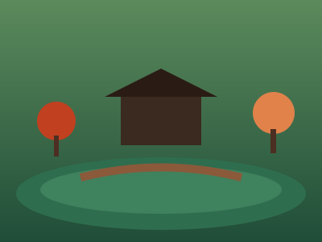
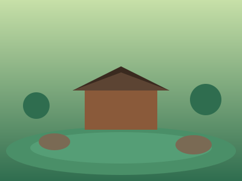
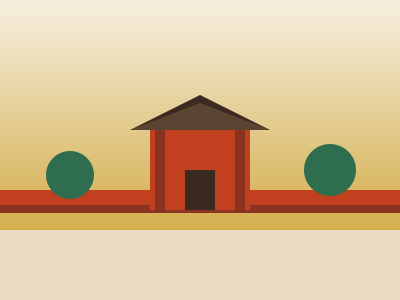
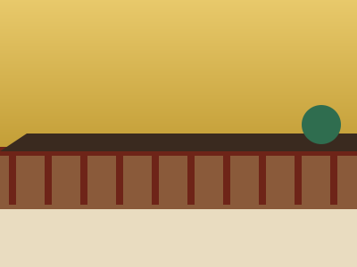

東山エリア
清水寺・祇園・八坂神社周辺 世界遺産
世界遺産清水寺
「清水の舞台から飛び降りる」の語源としても有名な木造の舞台からは京都市街を一望。春の桜、秋の紅葉の名所としても知られる。
八坂神社・祇園
祇園祭で知られる古社と、その門前に広がる花街「祇園」。紅殻格子の町家が並ぶ花見小路は京都らしい風情が漂う。

庭園高台寺
豊臣秀吉の正室・ねねが建立した寺院。池泉回遊式庭園と、夜間のライトアップ・竹林の演出が特に人気。2026年の「秋の夜間特別拝観」は10月23日〜12月13日で、点灯は午後5時から、受付は午後9時30分まで（昼夜の入れ替えはなし）。
二年坂・三年坂（産寧坂）
清水寺へと続く石畳の坂道。伝統的な町家を利用した土産物店やカフェが並び、着物レンタルでの街歩きも人気。
嵐山エリア
竹林・渡月橋・桂川周辺 絶景
絶景嵐山竹林の道
高く伸びた竹々が空を覆う約400mの散策路。「日本の音風景100選」にも選ばれた竹のざわめきが心地よい。
渡月橋
桂川に架かる嵐山のシンボル的な橋。背景の山並みと川の流れが四季で表情を変え、特に紅葉シーズンは絶景。

世界遺産天龍寺
嵐山を借景に取り入れた曹源池庭園が見事な世界遺産。竹林の道の入口に位置し、嵐山観光の起点にも便利。
洛中エリア
京都の中心部・二条城/御所/錦市場 世界遺産
世界遺産二条城
徳川将軍の京都滞在時の宿所として築城された城。歩くと音が鳴る「鴬張り」の廊下や豪華な障壁画が見どころ。

歴史京都御所
明治維新まで歴代天皇が住まいとした宮殿。広大な京都御苑の中にあり、事前予約なしで見学できる。
 市場
市場錦市場
400年以上の歴史を持つ「京の台所」。約390mのアーケードに130以上の店が並び、食べ歩きやお土産探しが楽しめる。
伏見・洛南エリア
千本鳥居・宇治・京都駅アクセス良好 必見
必見伏見稲荷大社
朱塗りの鳥居が連なる「千本鳥居」で世界的に有名な神社。稲荷山全体が信仰の対象で、山頂まで登るコースも人気。
東福寺
京都屈指の紅葉名所として知られる古刹。渓谷「洗玉澗」を望む通天橋からの眺めは秋になると特に絶景。2026年の秋期（11月14日〜12月6日）は通天橋が朝8時30分から拝観でき、この期間は共通拝観券の販売がない。混雑が予想されるため早めの時間帯がおすすめ。

歴史三十三間堂
全長120mに及ぶ日本最長の木造建築。堂内には1001体もの千手観音立像がずらりと並ぶ圧巻の光景。
 世界遺産
世界遺産平等院鳳凰堂（宇治）
10円硬貨のデザインでも知られる平安時代の傑作建築。京都駅から電車で約20分、宇治茶の名店巡りと合わせて訪れたい。